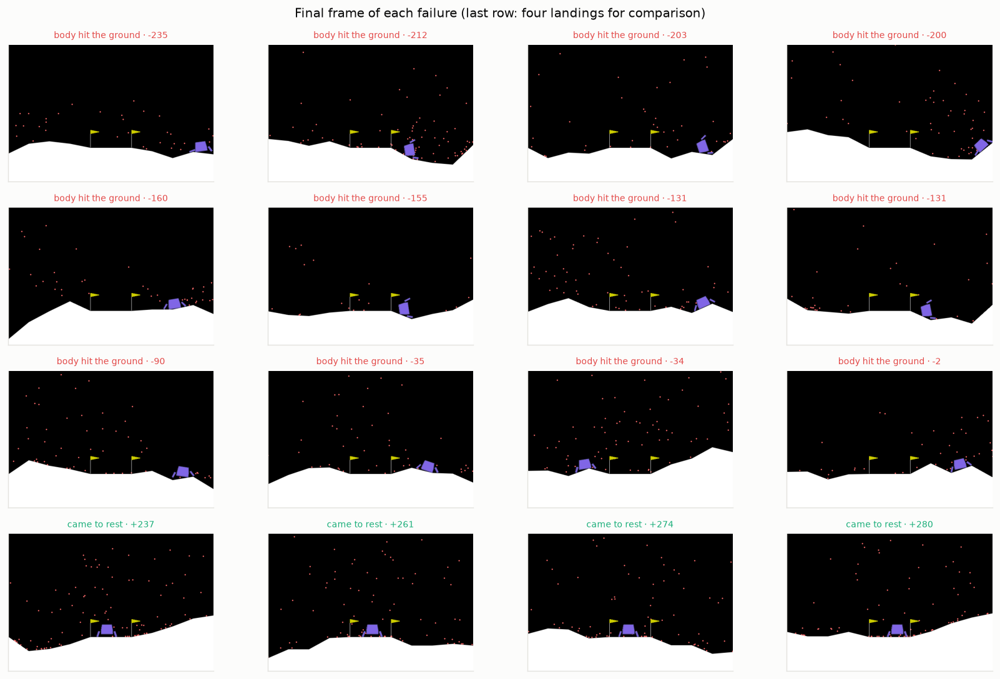
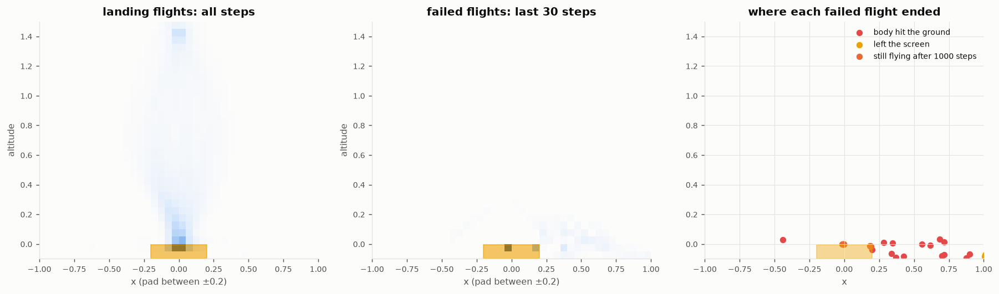
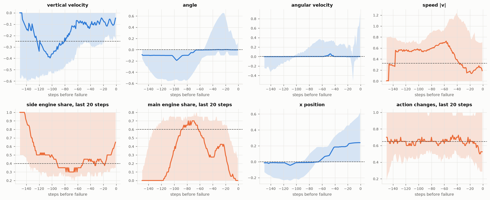
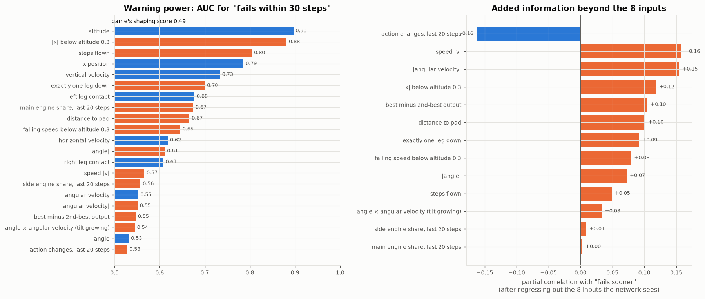
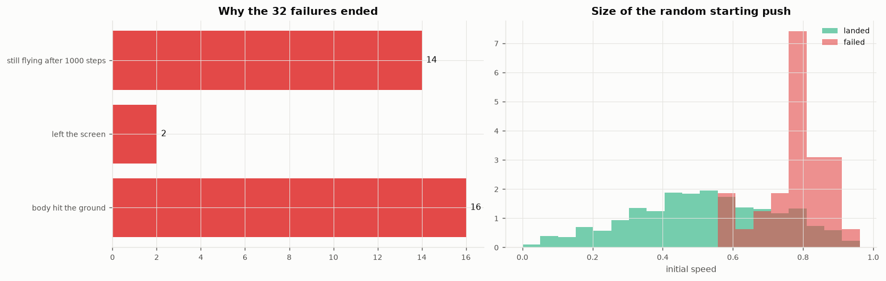
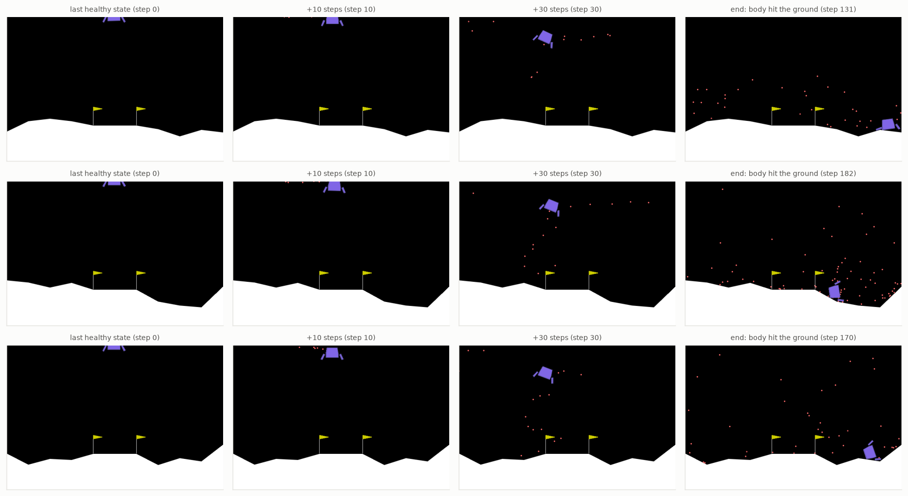

1000 flights on analysis seeds 3,000,000,000+ (never used in training, validation or test): 968 landed, 18 crashed, 14 timed out. "Fails soon" = within 30 steps.
| signal | median, landing flights | median at failure | AUC (warning) | added info (partial corr.) | leaves normal range (steps before) |
|---|---|---|---|---|---|
| altitude input | 0.36 | -0.01 | 0.90 (lower) | ||
| |x| below altitude 0.3 | 0.00 | 0.31 | 0.88 (higher) | +0.12 | 48 |
| steps flown | 123.00 | 186.50 | 0.80 (higher) | +0.05 | 150 |
| x position input | -0.00 | 0.24 | 0.79 (higher) | 19 | |
| vertical velocity input | -0.25 | -0.05 | 0.73 (higher) | ||
| exactly one leg down | 0.00 | 0.50 | 0.70 (higher) | +0.09 | 14 |
| left leg contact input | 0.00 | 1.00 | 0.68 (higher) | ||
| main engine share, last 20 steps | 0.60 | 0.00 | 0.67 (lower) | +0.00 | |
| distance to pad | 0.39 | 0.31 | 0.67 (lower) | +0.10 | |
| falling speed below altitude 0.3 | 0.00 | 0.05 | 0.65 (higher) | +0.08 | |
| horizontal velocity input | 0.00 | 0.00 | 0.62 (higher) | ||
| |angle| | 0.04 | 0.11 | 0.61 (higher) | +0.07 | 113 |
| right leg contact input | 0.00 | 0.00 | 0.61 (higher) | ||
| speed |v| | 0.32 | 0.19 | 0.57 (lower) | +0.16 | 102 |
| side engine share, last 20 steps | 0.40 | 0.65 | 0.56 (higher) | +0.01 | 150 |
| angular velocity input | 0.00 | 0.00 | 0.55 (higher) | ||
| |angular velocity| | 0.03 | 0.13 | 0.55 (higher) | +0.15 | 14 |
| best minus 2nd-best output | 0.00 | 0.00 | 0.55 (lower) | +0.10 | |
| angle × angular velocity (tilt growing) | 0.00 | 0.00 | 0.54 (higher) | +0.03 | |
| angle input | 0.00 | -0.00 | 0.53 (higher) | ||
| action changes, last 20 steps | 0.65 | 0.53 | 0.53 (higher) | -0.16 |
AUC of the game's own shaping score of the state: 0.49. "Leaves normal range" = steps before failure where the median first exceeds the 90th percentile of |value| on landing flights. Findings are leads: test them by retraining.
32 of 1000 flights failed. Titles give the cause and the episode reward.

Darker = more time spent there. 47% of failures end above the pad (|x| < 0.2).

Median and interquartile band over the last 150 steps of failed flights. Dashed: median over landing flights. Blue = an input the network sees, orange = a derived candidate.

Left: AUC of each signal alone for failing within 30 steps (positives: the last 30 steps of failed flights; negatives: landing flights before touchdown). Right: what each derived signal adds about time-to-failure once the network's own inputs are accounted for.

Left: how failures end. Right: whether failures start with a bigger random push than landings.

The three worst failures. "Healthy" = speed, |angle| and |angular velocity| all inside the 75th percentile of landing flights.
